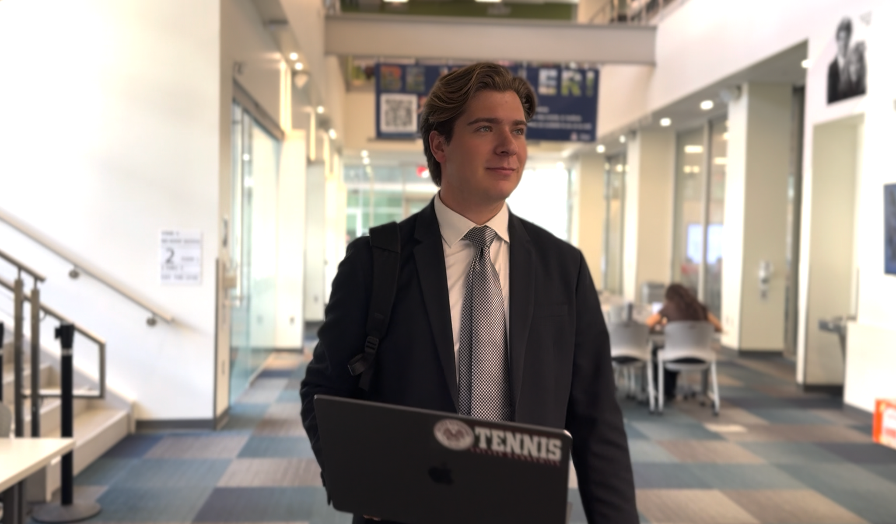
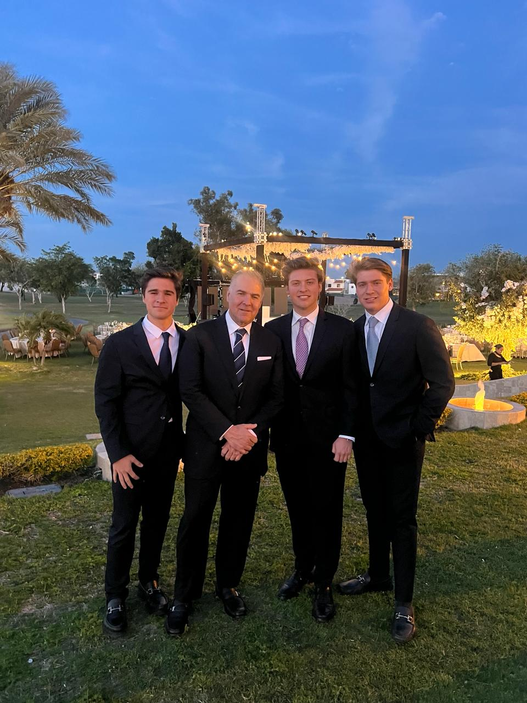
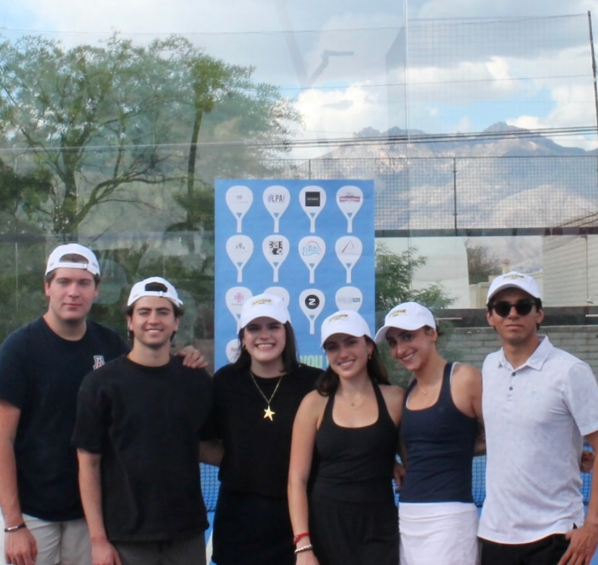
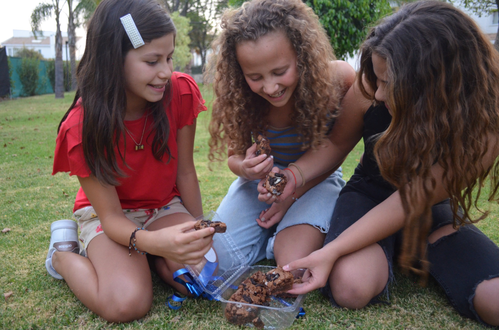
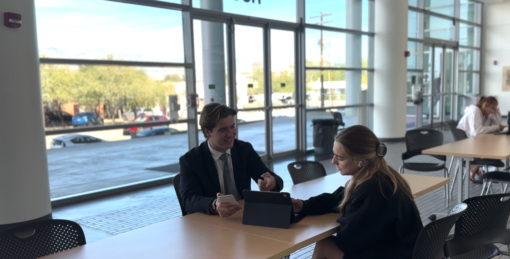

Hermosillo
My roots and first perspective on community
Eller College of Management · University of Arizona
ALVARO NORIEGA
I'm Alvaro Noriega, a Business Management student at Eller College of Management seeking an internship in operations or business management. I bring experience organizing inventory, coordinating events, and building a small business—and I enjoy working with others to get things done.

I bring practical thinking to everyday challenges and keep learning how to improve operations.
I enjoy working with others. I listen, share ideas, and build connections across teams, backgrounds, and cultures.
About me
My journey began in Hermosillo, Sonora, Mexico. I later lived in Puebla and Dublin, Ireland, and I now study Business Management at Eller College of Management, University of Arizona, in Tucson.
These experiences taught me to adapt, build relationships, and see challenges from more than one perspective. They also shaped my goal: to work in business operations where people, planning, and execution come together.
My experience includes supporting day-to-day operations at Culver Academies, analyzing inventory at Maztro Distributions, co-founding Noriega Bakery, and helping lead cross-border community efforts through Success Foundation.
Figures are drawn from my current resume.
My roots and first perspective on community
Entrepreneurial experience and personal growth
Studying and adapting in an international environment
Developing my business and leadership career
Resume & experience
My professional experience spans operations, analytics, entrepreneurship, student development, and nonprofit leadership. Each role has made me more comfortable solving problems with others.
Education
University of Arizona, B.S. in Business Management
Expected May 2028 · GPA 3.5 · Dean's List · WildCat Recognition Award
Help bring Success Foundation from Mexico to the United States, supporting its expansion through fundraising and cross-border partnerships for children receiving cancer treatment. Visit Success Foundation ↗
Supported daily operations, assignments, schedules, and student development in a demanding program.
Monitored more than 200 inventory levels and evaluated order data to support restocking decisions. Visit Maztro ↗
Co-founded a successful bakery in Puebla with my girlfriend. Together, we built the business; I managed customer relations, marketing, sales, budgeting, and production logistics, handling 800+ sales.
Participate in professional events and build relationships through mentoring and networking.
If the PDF does not display on your device, open it directly.
Professional persona video
A short introduction to my background, experiences, leadership approach, and career direction.
From Hermosillo to Tucson, every experience has helped me become a more adaptable teammate and a more intentional future business leader.
Watch directly on Vimeo ↗Professional evolution
For an operations team, collaboration matters when it leads to clear decisions and dependable follow-through. My SPI, PRS, and three rounds of 360° feedback show how I support others, communicate, and develop the habits I need to contribute as an intern.
I see myself as Amiable: calm, caring, and collaborative. My PRS average is Expressive: others see more visible confidence and energy. Both perspectives matter. My goal is to bring that energy into clear ideas, reliable work, and constructive accountability.
I want to create useful results while supporting the people around me.
In my SPI, helping others, creativity, and analytical problem solving each received 100/100. In PRS feedback, five reviewers selected Empathetic and three selected Problem-Solver. My R3 respect-for-ideas score was 4.0/4.0.
These measures suggest alignment between my values and how others experience me. In operations, I can use empathy to understand a problem and practical thinking to help resolve it. The motivator ratings reflect preferences, not proven proficiency.
My natural relationship focus can coexist with a more confident outward communication style.
My SPI coordinates are −2.0 proactivity and +4.0 reactivity (Amiable). My PRS average is +5.0 and +5.0 (Expressive). However, both PRS and R3 comments encourage me to share ideas earlier and finish my thoughts.
The difference shows that intent and reputation do not always match. A confident overall reputation does not mean I contribute consistently in every meeting. I will share one clear recommendation early, invite other views, and practice concise Q&A.
My strongest growth opportunity is to pair creative support with earlier planning and accountability.
My 360 quality-of-work rating rose from 79 in R1 to 86.8 in R2 and 95 in R3, on a 100-point scale. R3 peers praised consistent slide design. Accountability was 2.8/4.0 in R3, compared with the team average of 2.9.
The quality trend indicates progress across these projects, while accountability remains an area to improve. I will agree on owners and deadlines, share a sample slide before work begins, and address missed commitments respectfully. These are next steps, not outcomes already achieved.
Communication coordinates: SPI self-perception and PRS reviewer average.
Displayed window: −6 to +6 on both axes, chosen to include both points; this is not a claim about the instrument's full scale. Differences describe perspectives, not a change over time.
Selected PRS adjective counts. Social and Involved were also part of my SPI self-description.
Counts show reviewers who selected each adjective. This is a selection of descriptors, not the complete distribution.
“Alvaro is a hard worker who leads more by example than words.”
Anonymous PRS respondent
My 360° ratings on the same 100-point questions.
| Measure | R1 | R2 | R3 |
|---|---|---|---|
| Quality of work | 79 | 86.8 | 95 |
| Amount of effort | 90.8 | 94 | 95 |
| Positive team environment | 93 | 96 | 94.4 |
Bars use a 0–100 scale. Ratings are peer feedback from different projects; they do not establish why performance changed.
Latest 360° behavior ratings, R3. Scale: 0–4.
| Behavior | Me | Team avg. |
|---|---|---|
| Prepared & on time | 3.6 | 3.5 |
| Active engagement | 4.0 | 3.7 |
| Attentive listening | 3.8 | 3.77 |
| Quality deliverables | 3.8 | 3.47 |
| Respect for ideas | 4.0 | 3.73 |
| Accountability | 2.8 | 2.9 |
The clearest priority is accountability: supporting people also means setting expectations and following up.
01 / Speak earlierBring one evidence-based recommendation to each meeting and deliver it in a short, clear statement.
02 / Align before designingShare an example slide and a content checklist at the start, then leave time to verify facts and rehearse Q&A.
03 / Follow through togetherConfirm task owners and internal deadlines. Address missed commitments privately, clearly, and respectfully.
Sources: my Radian Self-Perception Inventory; Professional Reputation Survey results viewed Nov 3, 2026; Amber FA26 930AM 360° reports R1, R2, and R3. Comments are anonymous. Analysis reflects my interpretation of the reported evidence.
Selected portfolio
For teams hiring an operations or business management intern, these experiences show what I can contribute: organized information, clear communication, and hands-on coordination.
Leadership in daily operations
As a Facilities Manager and Student Life Counselor, I supported daily organization, helped students, and worked with others to solve problems.
My contribution: communicating with different people, supporting student life, and staying calm when priorities changed.
What I bring to a team: practical problem solving and care for the people who depend on the operation.

At Maztro Distributions, I combined inventory management with visual design for automotive lubricant products.
My contribution: I tracked 200+ inventory levels, processed order data for internal reporting, and designed the visual identity of automotive gear lubricants and oils. These products can be seen on the company website linked below.
Value for an operations team: organized inventory data supports replenishment decisions, while clear product visuals help communicate the offering to customers. I learned to connect operational details with customer-facing communication.

As Vice President of Success Foundation, I am helping bring a Mexican foundation to the United States, extending its mission across borders.
My latest initiatives: I organized a padel tournament and a fundraising party at a bar with a 15% donation arrangement to support the foundation. These initiatives are part of my work helping bring its mission from Mexico to the United States.
Value for a management team: organizing these events gave me practical experience coordinating activities with partners and bringing people together around a shared goal. I can apply these skills to team projects and daily operations.
In Business Communication (BCOM 314), we were given the opportunity to choose a company to study. Our team selected OxiClean and developed three presentations exploring the business, its audience, and opportunities to improve how it connects with consumers.
A new team: I worked with students from different places and business majors who were at the same stage in their studies. We did not know each other beforehand. Each person assumed a role, and we combined our perspectives to move the project forward.
Our approach: we progressed from company analysis to audience and benchmark analysis, then developed recommendations. I contributed to the content, slide design, and presentation delivery.
My growth: I have always enjoyed working with others, and this experience helped me open up to a new group. Presenting in English, my second language, gave me repeated practice in public speaking. Feedback from class and my teammates helped me organize ideas clearly, speak with more confidence, and learn practical presentation techniques.

I co-founded Noriega Bakery in Puebla with my girlfriend. Building a successful business together gave me hands-on experience turning an idea into an operation that served real customers.
My contribution: customer relations, marketing, sales, budgeting, and production logistics, with 800+ sales handled.
What I learned: collaboration is part of everyday business. Coordinating responsibilities, listening to customers, and following through on details helped me connect the people side of business with its daily operations.

Across these experiences, I have organized information, coordinated activities, and worked with others to serve customers and communities. My next goal is an operations or business management internship where I can support daily processes, communicate clearly, and learn from experienced managers. The photographs and organization links provide context for my experience.
Contact & professional presence
Hiring an operations or business management intern? I'd welcome a conversation about how my experience in inventory, event coordination, and entrepreneurship can support your team. I'm ready to contribute, learn your processes, and grow through hands-on responsibility.
Connect with me
alvaronoriega@arizona.edu ↗linkedin.com/in/alvaronoriega ↗Download my resume ↗Tucson, Arizona · No street address shared